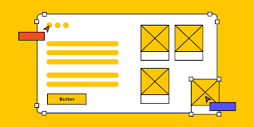
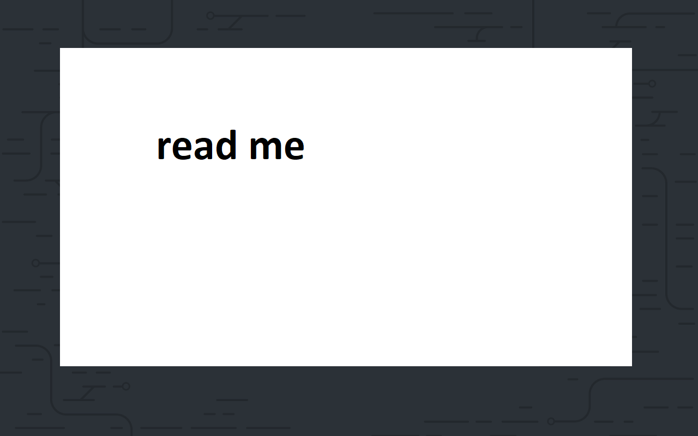

Purpose of Wireframe
The primary purpose of a wireframe is to outline the basic structural design and user experience of a website or application before any detailed design work is done. It's a visual representation of the layout, content, and functionality, helping designers, developers, and stakeholders understand the overall structure and flow.
Read more
GitHub
GitHub is a cloud-based platform where you can store, share, and work together with others to write code. Storing your code in a "repository" on GitHub allows you to: Showcase or share your work. Track and manage changes to your code over time. Let others review your code, and make suggestions to improve it.
Read more

ReadMe
A README file is a text file, often named "README.txt" or "README.md", included in a folder or repository to provide essential information about the project or data it contains.
Read more